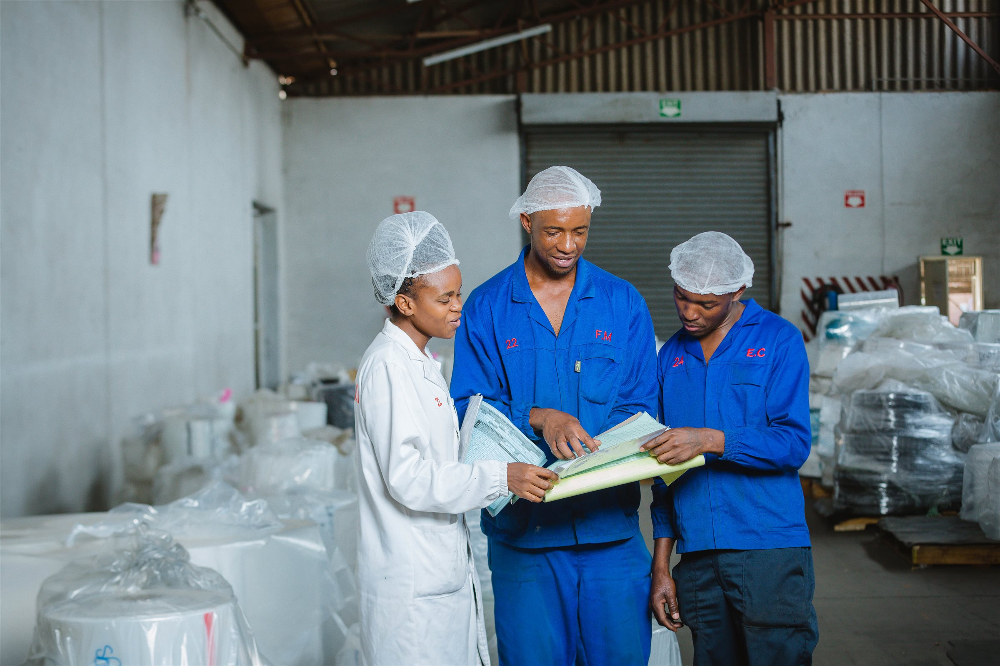

Business
Process Audit

At Southerton especially, capacity that has already been paid for is under-used. The floor raises problems, but follow-through is uneven.
Four things to act on first
Faster path from fault to repair
Especially at Southerton: an owner, a target date, and a clear escalation point for each open fault.
Agree the routing rules
Which work runs on which machine, and at Msasa or Southerton, so jobs match capacity that can carry them.
Close the finished-goods lag
Sales, planning and despatch work from the same day, not yesterday’s book.
Adopt a stable ERP
Manufacturing and warehousing modules, raw material through finished goods, no crashes that interfere with fiscalisation.
Finished goods are at least a day behind the floor
Goods made
Recorded in the finished-goods transfer book.
Typed into Excel
The workstation is kept offline by policy, so planning often collects updates by flash drive.
Sales phones despatch
To check availability, despatch stops work and walks the floor.
Stocktake resets the books
Accounts treat only post-stocktake opening balances as accurate.
Southerton faults wait months for a fix
- Three bagmakers down, awaiting parts and feedbackEng · Procurement
- High-output bagmaker moved, never reassembledSince Nov 2025
- PR05 running below full speedUncleared error codes
- Generator can only jog the printer, not produceNeeds repair
- Job-card list sent to directors, about 4 Sep 2026Some from 2024
Faster maintenance response
- A named owner for each fault
- A target date to resolve it
- A clear point where stalled parts or approvals go up the line
Without it, machines already paid for keep sitting idle and the site runs well below capacity.
The walk-in shop opened, but late
- Fit-out and signage were ready ahead of the planned open date of 1 September 2026
- The shop was still closed through early October
- It has since opened, but late
- The plan to staff the front from headquarters sales was in place; the opening itself was not
A ready retail front sat unused
- The delay left capacity idle while the site already had unused production capacity
- Walk-in stock replenishment from headquarters is still unsettled
- Day-to-day ownership of trading at the shop still needs a named owner
Jobs are not matched to the right machine
Assets the business has paid for are not earning
Southerton machines
- Bagmakers waiting on engineering and procurement since at least November 2025
- Faults that should be routine maintenance wait weeks or months for parts, feedback, or sign-off
PR05
- Runs, but not at full speed, because of uncleared error codes
- Also takes jobs too small to cover its setup
Headquarters vans
- Mercedes-Benz Sprinter, ADY 6949, not in service
- Ford Transit, ACG 5086, not in service
Where work frays at headquarters
Stock and despatch
- No live view of finished goods for sales or despatch
- Aged stock held for years against a similar order
- Large orders collected in fractions, or left for over a month
- Weak WIP labels slow the monthly count
Raw-material stores
- Material found by walking the room; no location system
- BOPP bought in standard sizes leaves offcuts that rarely get used
- Night-shift pellet use confirmed with production afterwards
- Late requisitions force overtime
Marketing and CRM
- No one owns marketing; sales staff cover it on top of their accounts
- No CRM, so no shared record of who the firm is talking to
- A CRM and a marketing owner would let the firm follow up leads faster
The current software is not built for manufacturing
- During outages, sales invoices by hand and backfills later
- Stock is entered by hand at each stocktake, not from daily movements
- Capture movements from raw-material receipt through conversion to finished goods, nearer to real time
- Stay stable, without crashes that interfere with fiscalisation
- Include modules for manufacturing and warehousing
- Make better labelling possible and reduce dependence on stocktake
Issues are raised, but they often stay open
Signals without closure
- Despatch warns when recurring stock runs low; the response is often slow
- Southerton job cards escalated to directors, some from 2024
- The City Plastics customer base was never activated
Labelling and identity
- WIP often marked by marker pen only
- No barcodes or SKUs; goods are identified by dimensions and customer
- Machine codes labelled inconsistently at Msasa and Southerton
Single points of failure
- One person runs goods received, stock books and material movement
- When the software crashes, invoicing goes manual
Eight actions, each with an owner
| # | Action | Owner |
|---|---|---|
| 1 | Clear the Southerton engineering backlog (PR05 error codes, bagmakers, generator) and put in place a faster maintenance response | Directors → Engineering / Procurement |
| 2 | Written minimum run sizes per machine and Msasa↔Southerton routing rules; brief sales | Planning + Sales + Southerton QA |
| 3 | Activate the City Plastics-era customer base and local volume for Southerton | Sales |
| 4 | Affix machine codes uniformly across all factories | Production |
| 5 | Cut finished-goods lag so shared books match the floor the same day | Production + Operations + Planning + Accounting |
| 6 | Standardise WIP/FG labelling and SKU identity | QA + Production + Planning |
| 7 | Adopt a stable ERP with manufacturing and warehousing modules | Directors + Accounting |
| 8 | Appoint one person to own marketing and adopt a CRM system | Directors + Sales |
Three decisions only the directors can make
Back a faster maintenance response at Southerton
Named owners, target dates and an escalation point for engineering and procurement.
Commit to a stable ERP
With manufacturing and warehousing modules, covering raw material through finished goods.
Appoint a marketing owner and adopt a CRM
So leads are followed up and client relationships sit in a shared record.
Questions and discussion
The evidence behind each point is in the written Business Process Audit report.